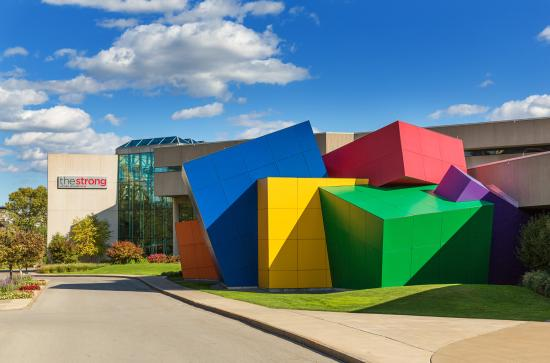

<div class="col-xs-12">
    <div class="carousel slide" id="myCarousel">
        <div class="carousel-inner">
            <div class="item active">
                <div class="col-xs-4"><a href="#1" class="thumbnail"></a>
                    <h6><b>Seabreeze Amusement Park</b></h6>
                    <h6>Seabreeze Amusement Park is 14 miles away from Budget Inn</h6>
                </div>
            </div>
            <div class="item">
                <div class="col-xs-4"><a href="#1" class="thumbnail"></a>
                    <h6><b>Royal Ontario Golf Course</b></h6>
                    <h6>A Geoffrey Cornish Designed Golf Course Established in 1928.The Ontario Golf Course
                        is a
                        10 minute drive from the motel.</h6>
                </div>
            </div>
            <div class="item">
                <div class="col-xs-4"><a href="#1" class="thumbnail"></a>
                    <h6><b>Rochester Downtown</b></h6>
                    <h6>Rochester is a city on the southern shore of Lake Ontario in the western portion of
                        the
                        U.S. state of New York, and the seat of Monroe County</h6>
                </div>
            </div>
            <div class="item">
                <div class="col-xs-4"><a href="#1" class="thumbnail"></a>
                    <h6><b>The Strong National Museum Of Play</b></h6>
                    <h6>The Strong® is a highly interactive, collections-based museum devoted to the history
                        and
                        exploration of play. It is one of the largest history museums in the United States
                        and
                        one of the leading museums serving families.</h6></div>
            </div>
            <div class="item">
                <div class="col-xs-4"><a href="#1" class="thumbnail"></a>
                    <h6><b>The Lake Ontario</b></h6>
                    <h6>The Lake Ontario is one of the Great Lakes, and the fourteenth largest lake in the
                        world.Baseball/Softball,Beach Volleyball,Boating,Fishing.Geo-caching,Food Service
                        (seasonal)
                        ,Lodge and Shelters for Rent.Pickleball,*Soccer,Swimming</h6>
                </div>
            </div>
            <div class="item">
                <div class="col-xs-4"><a href="#1" class="thumbnail"></a>
                    <h6><b>George Eastman House & Garden</b></h6>
                    <h6>The historic mansion and gardens at the George Eastman Museum. Original furnishings
                        and
                        artifacts, careful reproductions, and
                        beautifully restored landscape transport visitors to George Eastman’s time</h6></div>
            </div>
            <!-- add  more items here -->
            <!-- Example item start:  -->

            <div class="item">
                <div class="col-xs-4"><a href="#1" class="thumbnail"></a>
                    <h6><b>The High Falls of the Genesee River in Rochester</b></h6>
                    <h6>The High Falls (or Upper Falls) of the Genesee River in Rochester, New York is a fine
                        waterfall located right smab in the middle of the city.</h6>
                </div>
            </div>
            <div class="item">
                <div class="col-xs-4"><a href="#1" class="thumbnail"></a>
                    <h6><b>The Corning Museum of Glass</b></h6>
                    <h6>The Corning Museum of Glass is a museum in Corning, New York dedicated to the art,
                        history and science of glass</h6>
                </div>
            </div>
            <div class="item">
                <div class="col-xs-4"><a href="#1" class="thumbnail"></a>
                    <h6><b>The Finger Lake Area</b></h6>
                    <h6>The Finger Lakes is a region of New York State. It's named for its series of long,
                        thin
                        lakes, and known for its vineyards.</h6>
                </div>
            </div>

            <!--  Example item end -->
        </div>
        <!--<a class="left carousel-control" href="#theCarousel" data-slide="prev"><i
                class="glyphicon glyphicon-chevron-left"></i></a>
        <a class="right carousel-control" href="#theCarousel" data-slide="next"><i
                class="glyphicon glyphicon-chevron-right"></i></a>-->
    </div>
</div>